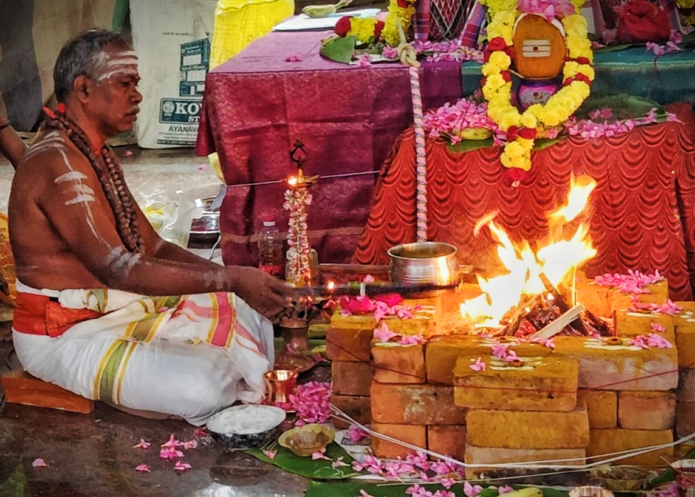
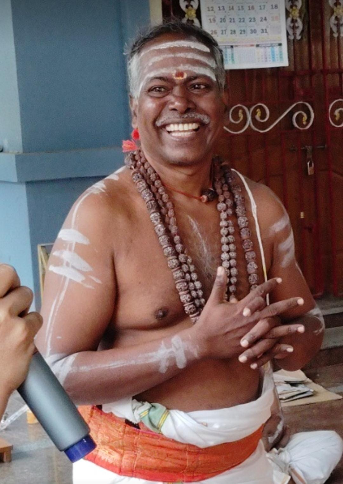

தொட்டிலிட்டு குழந்தைக்கு பெயரிடல் தொடக்க வெற்றி, தடைகள் நீக்கம்
குழந்தைக்கு பெயர் சூட்டும் சடங்கு – தமிழ் வழிபாடு முறைப்படி, அம்மையப்பர் முன்னிலையில், தீட்டு கழித்து, புனித நூல்களில் இருந்து பெயர் தேர்ந்தெடுத்து சூட்டுதல்.
சென்னை / தமிழ் புரோகிதர் சேவை
உங்கள் குடும்ப நலன், ஆரோக்கியம், தொழில் முன்னேற்றம், கல்வி சிறப்பு – அனைத்திற்கும் சாஸ்திரப்படி, சுத்தசுத்தமாக, முழு பக்தியுடன் வழிபாடு செய்து தரப்படும்.


செந்தமிழ் ஆகம அந்தணர் (தமிழ் வழிபாடு ஆசிரியர்)
உங்கள் வாழ்க்கையின் ஒவ்வொரு கட்டத்திலும் தேவையான அனைத்து சடங்குகளும் – தனிப்பட்ட வழிகாட்டலுடன், முழு கவனத்துடன்.
குழந்தைக்கு பெயர் சூட்டும் சடங்கு – தமிழ் வழிபாடு முறைப்படி, அம்மையப்பர் முன்னிலையில், தீட்டு கழித்து, புனித நூல்களில் இருந்து பெயர் தேர்ந்தெடுத்து சூட்டுதல்.
புதிய வீட்டில் நுழையும் முன்னும், குடியேறும் நாளிலும், முழு சுத்தம், தெய்வ அருள், வஸ்து சாந்தி அனைத்தும் சேரும் சடங்கு.
சனி, ராகு, கேது, சேவாய் தோஷம் போன்றவற்றிற்கு தனிப்பட்ட நவகிரக ஹோமம், ஜபம், தானம் வழிகாட்டல்.
குழந்தையின் தலைமுடி கழித்தல், காதில் துளை போடுதல் போன்ற முதல் சடங்குகளை அம்மையப்பர் முன்னிலையில், தமிழ் மரபு விளக்கத்துடன் வழிகாட்டப்படும்.
ஜாதக பொருத்தம், முகூர்த்த நாள், நிச்சயதார்த்த பூஜை ஆகியவை பற்றி தெளிவாக விளக்கம் கொடுத்து, இரு குடும்பங்களும் சமநிலையில் இணையும் வகையில் வழிகாட்டல்.
புதிய கடை, ஆஃபிஸ், ஷோரூம், தொழில் ஆரம்பிப்பதற்கு முன் லக்ஷ்மி, விநாயகர், நவகிரக அருளை பெறும் வகையில் ஆவாஹனம், ஹோமம், அலங்காரம் உடைய பூஜை.
குடும்பம், உடல்நலம், தொழில், மனஅழுத்தம், ஜாதக தோஷம் போன்ற எதற்காக வேண்டுமானாலும் தனிப்பட்ட முறையில் பேசிக் கொண்டு, தேவையான பரிகார பூஜை, ஜபம், தானம் வழிகாட்டப்படும்.
அருள்நீர் கலசம், அருள்நிறை கணபதி கலச வழிபாட்டுடன் கணபதி வேள்வி ஆற்றி செய்வது.
அருள்நீர் கலசம், அருள்நிறை கணபதி கலச வழிபாட்டுடன் கணபதி வேள்வி ஆற்றி செய்வது.
அருள்நீர் கலசம், அருள்நிறை கணபதி கலச வழிபாட்டுடன் கணபதி வேள்வி ஆற்றி செய்வது.
அருள்நீர் கலசம், அருள்நிறை கணபதி கலச வழிபாட்டுடன் கணபதி வேள்வி ஆற்றி செய்வது.
அருள்நீர் கலசம், அருள்நிறை கணபதி கலச வழிபாட்டுடன் கணபதி வேள்வி ஆற்றி செய்வது.
அருள்நீர் கலசம், அருள்நிறை கணபதி கலச வழிபாட்டுடன் கணபதி வேள்வி ஆற்றி செய்வது.
அருள்நீர் கலசம், அருள்நிறை கணபதி கலச வழிபாட்டுடன் கணபதி வேள்வி ஆற்றி செய்வது.
அருள்நீர் கலசம், அருள்நிறை கணபதி கலச வழிபாட்டுடன் கணபதி வேள்வி ஆற்றி செய்வது.
அருள்நீர் கலசம், அருள்நிறை கணபதி கலச வழிபாட்டுடன் கணபதி வேள்வி ஆற்றி செய்வது.
அருள்நீர் கலசம், அருள்நிறை கணபதி கலச வழிபாட்டுடன் கணபதி வேள்வி ஆற்றி செய்வது.
அருள்நீர் கலசம், அருள்நிறை கணபதி கலச வழிபாட்டுடன் கணபதி வேள்வி ஆற்றி செய்வது.
அடியேனை பற்றி, அருட்குருநாதர் சிவத்திரு. மு.பெ.சத்தியவேல் முருகனாரிடம் ஓக தீக்கை பெற்று, நாள்தோறும் சைவ அனுட்டானம் என்ற தனி மனித ஒழுக்க நெறியை பின்பற்றியும், 270க்கும் மேற்பட்ட சிவபெருமான் பாடல் பெற்ற தலங்களை சேவித்து பதிகங்களை முற்றோதல் செய்தும் திருவேணி சங்கமம், காசி, கயா, அயோத்தி, 4 சோதிர்லிங்கம் தலங்கள் போன்ற புண்ணிய திருத்தலங்களை சேவித்து திருவருள் பெற்றும், தமிழ் மந்திரம் நூலான அருள்மிகு திருமூலர் அருளிய திருமந்திரம் கூறும் தமிழர்களின் வாழ்க்கை நெறியான அருள்படிகள்-16 யும் படிப்படியாக பின்பற்றி வருகிறேன். அடியேன் 20க்கும் மேற்பட்ட குடமுழுக்குகள், 60க்கும் மேற்பட்ட தமிழ் திருமுறை திருமணங்கள் உள்பட 1300க்கும் மேற்பட்ட வாழ்வியல் சடங்குகளை தமிழாகமப்படியும் இறையன்போடும் உணர்வு பூர்வமாகவும் கடந்த 12 ஆண்டுகளாக சாதாரண கட்டணத்தில் நடத்தி தருகிறேன்.
கீழே உள்ள விவரங்களை நிரப்புங்கள். பூஜை வகை, தேதிகள், உங்கள் வசதி – அனைத்தையும் கருத்தில் கொண்டு நான் நேரடியாக உங்களை அழைத்து ஆலோசனை தருகிறேன்.